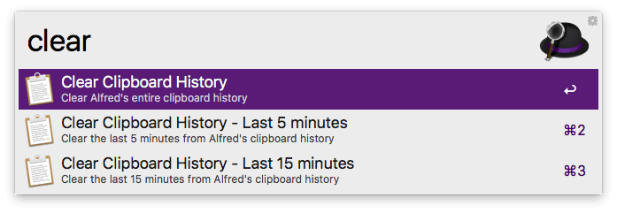

Why isn't my Clipboard History working?
Alfred's Clipboard History is a brilliantly useful feature that allows you to save text snippets to either a temporary clipboard or permanent snippets.
If you're unable to save text clips or the behaviour isn't as expected, take a look at the steps below.
1. Grant Alfred Permissions in macOS
In order to perform certain actions on your Mac, such as pasting clipboard content, you need to tell macOS that you want Alfred to do this.
Go to Alfred's General preferences, and click the Request Permissions... button. This will pop up the macOS Security & Privacy preferences, where you can give Alfred the necessary permissions to perform actions. Specifically, Alfred requires Accessibility for the Clipboard History feature.
Upgraded to Catalina? If you've recently updated to Catalina, you may need to remove and re-grant permissions. Click the lock icon and authenticate, then remove Alfred from the Accessibility preferences, then add him again. You'll then be good to go!
2. Turn on Clipboard History
By default the Clipboard is disabled for privacy reasons. Before you can start using the Clipboard History feature, you need to enable it by going to the Preferences panel, under Features > Clipboard. Ensure that the "Persist for" checkbox is ticked for the appropriate clip types.
3. Ignored applications
Alfred ignores certain applications, like Keychain Access and 1Password, to avoid copying passwords to the clipboard and making them visible in plain text.
If you find that text clips you copy using Cmd + C don't appear in Alfred's clipboard, check that the application you're copying from isn't in the Ignore Apps list.
4. App exceptions
There are a small number of apps that unfortunately don't play nice with clipboard history; These are either Java-based applications or apps run in virtual machines (e.g. Windows apps in Parallels). Due to the way these apps handle copying and pasting, they're incompatible.
5. Clipboard database corrupted
The text clips you save are stored in a small database, which Alfred searches when you use the clipboard history search. On very rare occasions, it's possible for your clipboard database to become corrupted. When this happens, the best solution is to clear your clipboard history, which will rebuild the clipboard.db file.
To do this, pop up Alfred's search box and type "clear" and select the "Clear Alfred's entire clipboard history" option.

This won't affect your saved Snippets, which are stored in a separate database to your clipboard entries.
Take a look at the Clipboard History feature page to find out more about using Clipboard History.